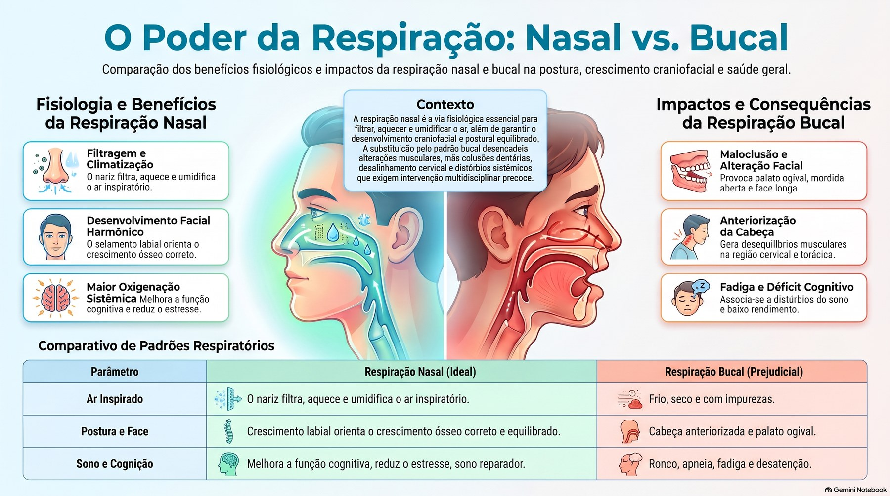

O poder da respiração: nasal x bucal

Ler o texto do infográfico
Respiração nasal: fisiologia e benefícios
- Filtragem e climatização: o nariz filtra, aquece e umidifica o ar inspirado.
- Desenvolvimento facial harmônico: o selamento labial orienta o crescimento ósseo correto.
- Maior oxigenação: melhora a função cognitiva e reduz o estresse.
Contexto
A respiração nasal é a via fisiológica essencial para filtrar, aquecer e umidificar o ar, além de garantir o desenvolvimento craniofacial e postural equilibrado. A substituição pelo padrão bucal desencadeia alterações musculares, más oclusões dentárias, desalinhamento cervical e distúrbios sistêmicos que exigem intervenção multidisciplinar precoce.
Respiração bucal: impactos e consequências
- Maloclusão e alteração facial: palato ogival, mordida aberta e face longa.
- Anteriorização da cabeça: desequilíbrios musculares na região cervical e torácica.
- Fadiga e déficit cognitivo: associa-se a distúrbios do sono e baixo rendimento.
Comparativo
- Ar inspirado: pelo nariz, filtrado, aquecido e umidificado; pela boca, frio, seco e com impurezas.
- Postura e face: pelo nariz, crescimento ósseo correto e equilibrado; pela boca, cabeça anteriorizada e palato ogival.
- Sono e cognição: pelo nariz, melhor função cognitiva, menos estresse e sono reparador; pela boca, ronco, apneia, fadiga e desatenção.
Material educativo. Não substitui a consulta nem a orientação da sua equipe de saúde.